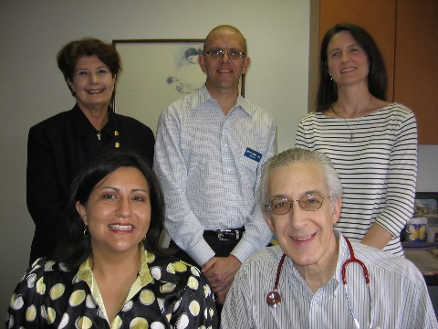

Pediatric Medicine, P.A. offers comprehensive pediatric care to all children. Established in 1995, our practice is conveniently located in the South Texas Medical Center and accepts virtually all medical insurance plans. Our providers include four fully-qualified pediatricians and a pediatric nurse practitioner. We pride ourselves on service. Parents can call for medical advice from our experienced staff. Same-day sick appointments are readily available to evaluate your child. To accommodate working parents, we offer late afternoon and early evening visits, and the office is open most Saturday mornings. Our doctors are affiliated with the Methodist Children's Hospital for emergency and in-patient care. We see newborn babies at both Methodist and St. Luke's Hospitals.
